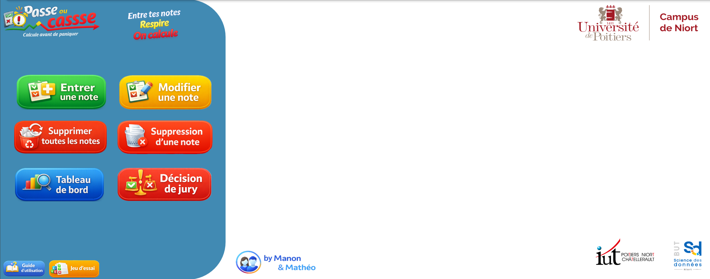
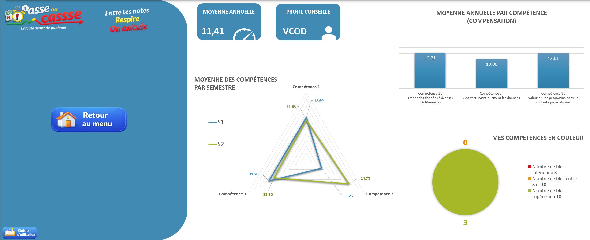
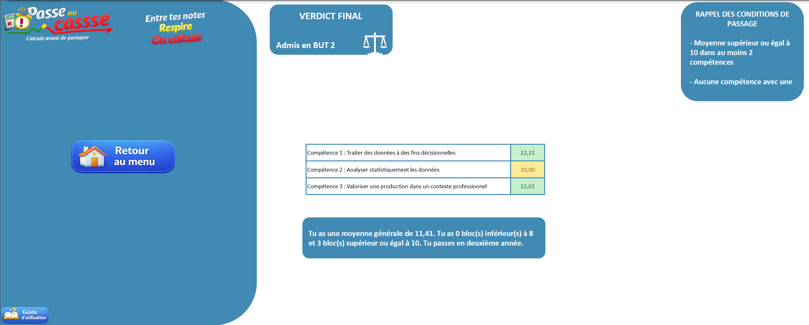
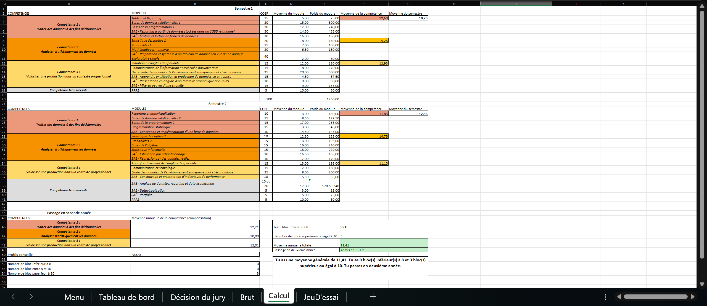
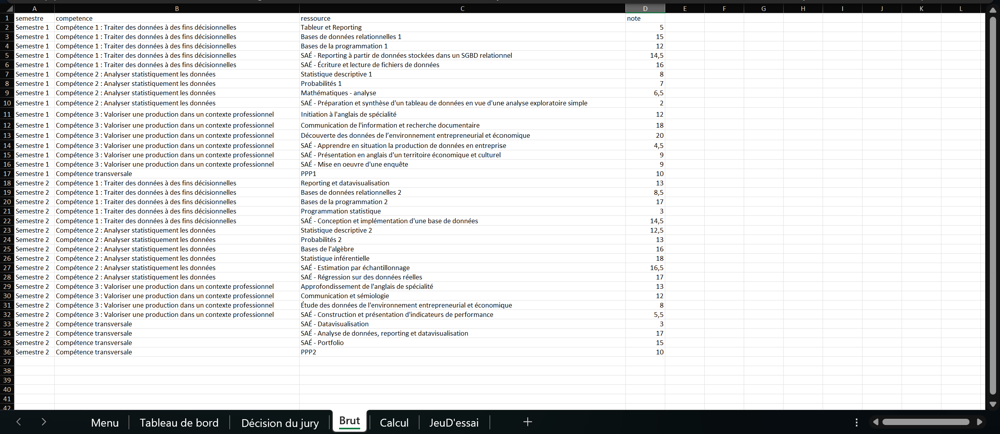

Outil de gestion des notes BUT SD sous Excel & VBA
Conception d'une application complète de suivi des notes intégrant l'ensemble des règles de gestion du BUT SD : coefficients, compensation entre compétences, gestion des ABI, décision de jury automatisée et tableau de bord dynamique.
Année
2025 – 2026 (S1)
Date de rendu
Déc. 2025
Cadre
Binôme avec Mathéo
Livrable
Application Excel + oral individuel
Outils
SAÉ
Reporting à partir de données stockées dans un SGBD relationnel
L'objectif de cette SAÉ était de concevoir un outil personnel de gestion des notes pour le BUT SD1 sous Excel. L'application devait permettre de saisir ses notes au fil de l'année, de visualiser ses résultats via un tableau de bord dynamique, et d'obtenir automatiquement la décision de jury (passage en 2ème année, compétences validées, parcours conseillé). Le tout devait être ergonomique, intuitif et fidèle aux règles de gestion du BUT SD : coefficients par module, compensation entre compétences, gestion des ABI.
Travail réalisé en binôme avec Mathéo. Livrable Excel à rendre sur Updago avant le 21 décembre 2025. Évaluation portant pour moitié sur la qualité technique (opérationnalité, optimisation, ergonomie, VBA) et pour moitié sur un oral individuel.
Constitution d'un jeu de données réaliste comprenant tous les modules des deux semestres avec leurs coefficients, masqué à l'utilisateur final. Accessible via un bouton « Jeu d'essai » pour tester rapidement l'ensemble des fonctionnalités.
Feuille masquée récupérant automatiquement les notes pour calculer les moyennes pondérées par module, compétence et semestre. Intègre la compensation annuelle, le décompte des blocs selon les seuils (8 et 10) et la décision automatique de passage. Grande rigueur exigée pour éviter toute erreur en cascade.
Développement complet en VBA via des Userform. Six boutons d'action, formulaires avec listes déroulantes dynamiques et liées (semestre → compétence → module). Gestion des ABI avec possibilité de simuler l'impact sur la décision de jury.
Tableau de bord synthétique : moyenne annuelle, profil de parcours conseillé, radar S1/S2, histogramme par compétence avec compensation, diagramme circulaire des blocs. Page « Décision de jury » avec verdict final, code couleur et rappel des conditions.
Réalisation d'un tutoriel vidéo complet montrant l'utilisation de l'application, publié sur YouTube.





Apprentissages critiques
Ressources mobilisées
Compétences techniques
La première difficulté a été de cerner l'ensemble des règles de gestion du BUT SD : les coefficients par module, le système de compensation entre compétences sur l'année, le fonctionnement des ABI (absences injustifiées), les seuils de passage (moyenne ≥ 10 dans au moins deux compétences, aucune compétence strictement inférieure à 8). Il fallait tout anticiper pour que l'outil couvre la totalité des cas de figure possibles, y compris les situations limites.
Concevoir une base de données stratégique sous Excel s'est révélé plus complexe que prévu. Il fallait penser simultanément à la facilité de saisie par l'utilisateur et à la capacité de la feuille de calcul à retrouver chaque note pour appliquer les bons coefficients. La feuille de calcul elle-même a exigé un travail de rigueur intense : la moindre erreur de référence ou de coefficient faussait l'ensemble des résultats en cascade.
En cours de développement, nous avons réalisé que notre première structure de base de données limitait le nombre de notes saisissables, ce qui n'était pas acceptable pour un utilisateur réel. Nous avons donc dû repenser entièrement l'architecture de la base, ce qui a entraîné une refonte complète du code VBA et de la feuille de calcul en plein milieu de la SAÉ. Cette décision, bien que coûteuse en temps, s'est avérée indispensable pour la qualité finale du produit.
Au moment de fusionner nos travaux respectifs (l'interface et le moteur de calcul), nous avons rencontré des problèmes d'intégration : malgré l'utilisation d'un vocabulaire et de conventions identiques dans nos fichiers, la mise en commun ne fonctionnait pas du premier coup. Il a fallu déboguer méthodiquement les références croisées entre les Userform, la base de données et la feuille de calcul pour rétablir la cohérence de l'ensemble.
Cette SAÉ m'a permis de développer des compétences concrètes en conception de bases de données structurées sous Excel, en développement VBA (Userform, listes déroulantes dynamiques, gestion d'événements), en création de tableaux de bord dynamiques avec des graphiques variés (radar, histogramme, diagramme circulaire), et en réalisation d'un guide d'utilisation sous forme de tutoriel vidéo. J'ai également appris à construire des formules complexes imbriquées pour automatiser des calculs métier faisant intervenir de nombreuses variables.
Le travail en binôme m'a appris l'importance de la communication et de la coordination, notamment lors de la phase d'intégration. J'ai développé un sens de l'ergonomie et de l'expérience utilisateur en cherchant à rendre l'outil le plus intuitif possible. La refonte de la base de données en cours de projet m'a aussi appris à prendre des décisions difficiles quand la qualité du livrable l'exige, même si cela implique de recommencer une partie du travail.
Avec le recul, j'aurais consacré davantage de temps en amont à une réflexion approfondie sur les règles de gestion et l'architecture de la base de données. Mieux anticiper les besoins de l'utilisateur et les contraintes techniques dès la phase de conception nous aurait évité la refonte en cours de route et fait gagner un temps précieux.